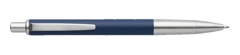

Napkin
Sketch
Handwrite
Text
Box
Oval
Diamond
Arrow
Select

Ballpoint
Menu
Save
Save PNG Image
2× HiDPI · full napkin texture & ink
Save SVG Vector
Editable vector ink + napkin background
Pen & Writing Style
Applies to future ink & pen sound
×
Pen
Handwriting Style
Café Menu
Get caffeinated for better ideas
×